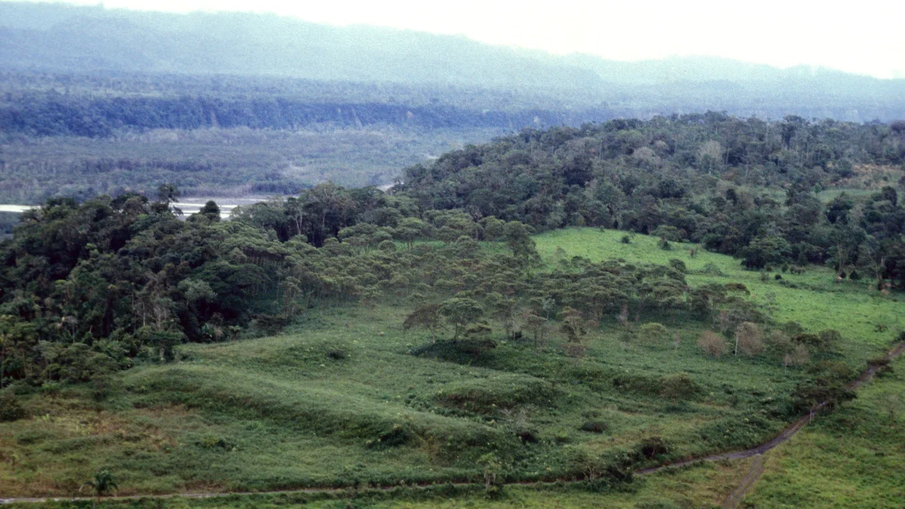

Huge network of ancient cities uncovered in the Amazon rainforest
The highly structured pre-Hispanic settlements, with wide streets and long, straight roads, plazas and clusters of monumental platforms were found in the Upano Valley of Amazonian Ecuador, in the eastern foothills of the Andes, according to a study published in the journal Science on Thursday.
The discovery of the earliest and largest urban network of built and dug features in the Amazon so far was the result of more than two decades of investigations in the region by the team from France, Germany, Ecuador and Puerto Rico.
The research began with fieldwork before deploying a remote sensing method called light detection and ranging, or lidar, which used laser light to detect structures below the thick tree canopies.
Lead study author Stéphen Rostain, an archeologist and director of Research at France’s National Center for Scientific Research (CNRS), described the discovery as “incredible.”
'Advanced engineering'
“The lidar gave us an overview of the region and we could appreciate greatly the size of the sites,” he told CNN Friday, adding that it showed them a “complete web” of dug roads. “The lidar was the cherry on the cake.”
Rostain said the first people who lived there, 3,000 years ago, had small, dispersed houses.
However, between approximately 500 BCE and 300 to 600 CE, the Kilamope and later Upano cultures began to build mounds and set their houses on earthen platforms, according to the study authors. These platforms would be organized around a low, square plaza.
Data from LiDAR revealed more than 6,000 platforms within the southern half of the 600-square-kilometer (232-square-mile) area surveyed.
The platforms were mostly rectangular, although a few were circular, and measured about 20 meters by 10 meters (66 feet by 33 feet), according to the study. They were typically built around a plaza in groups of three or six. The plazas also often had a central platform.
The team also discovered monumental complexes with much larger platforms, which, they said, probably had a civic or ceremonial function
At least 15 clusters of complexes identified as settlements were discovered.
Some settlements were protected by ditches, while there were obstructions to roads near some of the large complexes. This suggests the settlements were exposed to threats, either external or resulting from tension between groups, the researchers said.
Even the most isolated complexes were linked by pathways and an extensive network of larger, straight roads with curbs.
In the empty buffer zones between complexes, the team found features of land cultivation, such as drainage fields and terraces. These were linked to a network of footpaths, according to the study.
“For that reason, I call this garden cities,” said Rostain, who added: “It’s a complete revolution in our paradigm about the Amazon.”
“We have to think that all the Indigenous (people) in the rainforest were not semi-nomadic tribes lost in the forest, looking for food. They’re a big variety, diversity of cases and some were also with (an) urbanistic system, with (a) stratified society,” he said.
The overall organization of the cities suggests “the existence of advanced engineering” at the time, according to the study authors, who concluded that the garden urbanism of the Upano Valley “provides further proof that Amazonia is not the pristine forest once depicted.”
Rostain said we should imagine pre-Columbian Amazonia “like a nest of ants,” with everybody busy with activities.
Similar sites found across the Americas
This newly discovered urban network aligns closely with other sites that have been found across the tropical forests of Panama, Guatemala, Belize, Brazil and Mexico, according to landscape archeologist Carlos Morales-Aguilar, a postdoctoral fellow at the University of Texas at Austin, who was not involved in the study.
He called the study “groundbreaking,” telling CNN it not only “provides concrete evidence of early, advanced urban planning in the Amazon but also contributes significantly to our understanding of the cultural and environmental legacy of Indigenous societies in this region.”
In 2022, Morales-Aguilar was part of a team of researchers that used LiDAR to uncover a vast site in northern Guatemala, with hundreds of ancient, interconnected Mayan cities, towns and villages, as well as a 110-mile (177-kilometer) network of raised stone trails connecting communities.
He said the findings in this latest study mirror the advanced techniques in agriculture and urban planning that he observed in northern Guatemala and “offer new insights into the complexities of these early societies.”